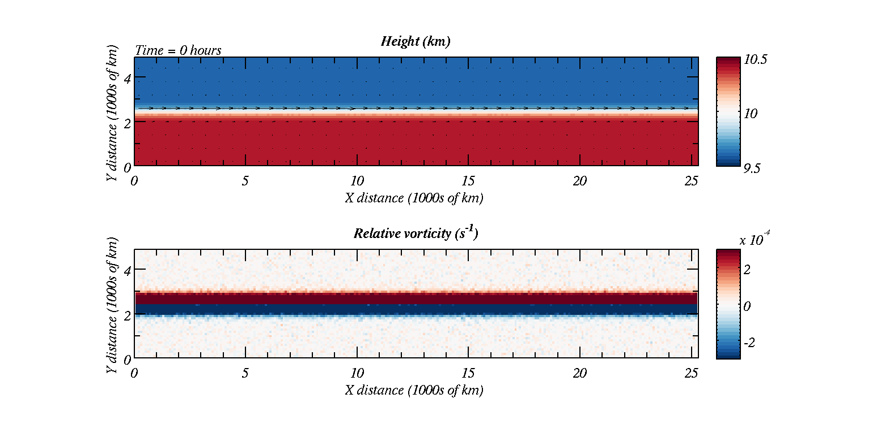
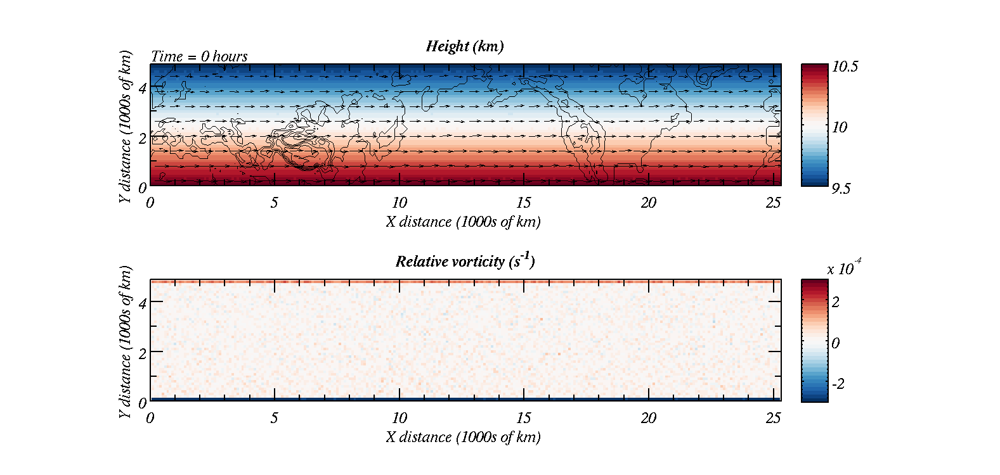

Shallow Water Equations in MATLAB / Python
- Overview
-
This page is adapted from Robin Hogan's webpage on Shallow Water Equations in MATLAB. The model can be used to illustrate the following phenomena:
- Gravity waves
- Tsunamis
- Orographic Rossby waves
- Upscale energy cascades
- Barotropic instability and frontal cyclogenesis
- Equatorial Rossby and Kelvin waves
- Numerical instability and numerical artifacts
More info...The equations that are solved are the shallow water equations which are: \[ \begin{eqnarray} \frac{\partial h}{\partial t}+\frac{\partial \left(uh\right)}{\partial x}+\frac{\partial \left(vh\right)}{\partial y}=0,\\ \frac{\partial uh}{\partial t}+\frac{\partial \left(u^2h+gh^2/2\right)}{\partial x}+\frac{\partial \left(uvh\right)}{\partial y}=h\left(fv-g\frac{\partial H}{\partial x} \right),\\ \frac{\partial vh}{\partial t}+\frac{\partial \left(uvh\right)}{\partial x}+\frac{\partial \left(v^2h+gh^2/2\right)}{\partial y}=h\left(-fu-g\frac{\partial H}{\partial y} \right), \end{eqnarray} \] More details on why we are solving these equations, and where they come from, is given below.
- Instructions
-
Download the files to your directory in MATLAB. They should all be downloaded to your working directory.
-
Because of some incompatibilities GNU Octave users will want to replace the animate.m script with animate_octave.mMATLAB Files: Python Files: - Examples
-

Above shows the height of the fluid, with wind vectors superimposed as well as vorticity of the fluid plotted in the lower graph. We start with a jet and this breaks down into barotropic instability.

Above shows easterly flow at the equator. Similar to barotropic instability the flow breaks down, but is guided by the change of sign of the Coriolis parameter.

The above shows how a uniform westerly flow can develop into a Rossby wave downwind of high mountains.
- Shallow Water Equations
-
The shallow water equations do not necessarily have to describe the flow of water. They can describe the behaviour of other fluids under certain situations. For example we can think of the atmosphere as a fluid. The equations governing its behaviour are the Navier-Stokes equations; however, these are notoriously difficult to solve. The shallow water equations can be thought of as an approximation to the Navier-Stokes equations and are solved more readily. There are four points we need to consider (click on the info tabs below for details)
Equation of continuity...Key laws used in fluid mechanics are continuity equations. For a constant density fluid the continuity equation specifies that there can be no divergence within the fluid. If there were then the fluid could not maintain constant density because mass would either accumulate or be removed from different parts of the fluid. Hence, we set the divergence to zero:
\[ \begin{eqnarray} \nabla\cdot \vec{v}&=&0\\ \frac{\partial u}{\partial x} +\frac{\partial v}{\partial y} +\frac{\partial w}{\partial z} &=&0 \end{eqnarray} \]
In this shallow water model we are only considering 2-d flow; however, there is a third dimension, which is the height of the fluid. We assume that vertical motions are the same throughout the depth of the fluid; hence, we can integrate the contunuity equation over \(z\) between \(H\) and \(h+H\):\[ \int _H ^{h+H} \frac{\partial u}{\partial x} dz+ \int _H ^{h+H} \frac{\partial v}{\partial y} dz+ \int _H ^{h+H} \frac{\partial w}{\partial z} dz=0 \]
For the first two terms we apply a technique called differentiation under the integral sign to find, e.g.:\[ \int _H^{H+h(x,y)} \frac{\partial u}{\partial x} dz = \frac{\partial }{\partial x}\left(\int _H^{H+h(x,y)} u dz \right)-u(x,y)\frac{\partial h}{\partial x} \]
We also note that the third term \(\int _H ^{h+H} \frac{\partial w}{\partial z} dz\) evaluates as \(w(H+h)-w(H)\) and since \(w(H)=0\) this is equal to the total derivative of the top of the fluid wrt time, \(=\frac{\partial h}{\partial t}+u\frac{\partial h}{\partial x}+v\frac{\partial h}{\partial y}\); hence:
\[ \frac{\partial h}{\partial t}+\frac{\partial \left(hu\right)}{\partial x}+\frac{\partial \left(hv\right)}{\partial y}=0 \]
This is the equation of continuity solved in the shallow water model; however, more equations need to be solved.
Equation for pressure...We assume that the fluid is in hydrostatic balance. That is:
\[ \frac{\partial P}{\partial z}=-\rho g \]
with \(\rho\) equal to a constant.
The hydrostatic equation with constant density implies that we can describe the pressure at height \(z\) as:\[ P\left(z\right)=-\rho g\left(z-H\right)+P_s\left(x,y,t \right) \]
where \(H\) is the height of the orography. With the boundary condition that \(P\left(z=h+H\right)=0\) we may determine \(P_s\) and find that:\[ P\left(z\right)=-\rho g\left(z-\left(H+h\right)\right) \]
Non-conservative Horizontal Momentum Equations...The non-conservative horizontal momentum equations are (i.e. the Navier-Stokes equations in 2-d):
\[ \begin{eqnarray} \frac{\partial u}{\partial t}+u\frac{\partial u}{\partial x}+v\frac{\partial u}{\partial y} &=& fv -\frac{1}{\rho}\frac{\partial P}{\partial x}\\ \frac{\partial v}{\partial t}+u\frac{\partial v}{\partial x}+v\frac{\partial v}{\partial y} &=& -fu -\frac{1}{\rho}\frac{\partial P}{\partial y} \end{eqnarray} \]
Recall from above we found that the pressure field:\[ P\left(z\right)=-\rho g\left(z-\left(H+h\right)\right) \]
Now we use this equation to redefine the pressure derivatives on the right hand side of the momentum equations. We find that:\[ \begin{eqnarray} -\frac{1}{\rho}\frac{\partial P}{\partial x} &=& -g\frac{\partial \left( h+H\right)}{\partial x}\\ -\frac{1}{\rho}\frac{\partial P}{\partial y} &=& -g\frac{\partial \left( h+H\right)}{\partial y} \end{eqnarray} \]
Conservative Horizontal Momentum Equations...In order to derive the remaining two equations we use the Non-conservative Horizontal Momentum Equations with the Equation of continuity to derive the conservative Horizontal Momentum Equations.
First we multiply the non-conservative horizontal momentum equations by \(h\)\[ \begin{eqnarray} h\frac{\partial u}{\partial t}+hu\frac{\partial u}{\partial x}+hv\frac{\partial u}{\partial y} &=& fhv -hg\frac{\partial \left(h+H\right)}{\partial x}\\ h\frac{\partial v}{\partial t}+hu\frac{\partial v}{\partial x}+hv\frac{\partial v}{\partial y} &=& -fhu -hg\frac{\partial \left(h+H\right)}{\partial y} \end{eqnarray} \]
We then add the product of \(u\) and the continuity equation to the \(u\) momentum equation (above) and the product of \(v\) and continuity equation to the \(v\) momentum equation (above). The \(u\) momentum equation then becomes:\[ \begin{eqnarray} h\frac{\partial u}{\partial t}+u\frac{\partial h}{\partial t}+u\frac{\partial \left(hu\right)}{\partial x}+u\frac{\partial \left(hv\right)}{\partial y}+ hu\frac{\partial u}{\partial x}+hv\frac{\partial u}{\partial y} &=& fhv -hg\frac{\partial \left(h+H\right)}{\partial x} \end{eqnarray} \]
and there is a corresponding \(v\) momentum equation.
We may gather some of the terms together by making use of the product rule for differentiation. The final result is the shallow water conservative momentum equations:\[ \begin{eqnarray} \frac{\partial hu}{\partial t}+\frac{\partial \left(hu^2+\frac{gh^2}{2}\right)}{\partial x}+\frac{\partial uvh}{\partial y} &=& fhv -hg\frac{\partial \left(H\right)}{\partial x}\\ \frac{\partial hv}{\partial t}+\frac{\partial uvh}{\partial x}+\frac{\partial \left(hv^2+\frac{gh^2}{2}\right)}{\partial y} &=& -fhu -hg\frac{\partial \left(H\right)}{\partial y} \end{eqnarray} \]
- Running the model
-
You should have downloaded the files to your working directory in MATLAB or Python. This exercise guides you through setting up and running the model for different scenarios. We will consider:
- Gravity waves
- Tsunamis
- Barotropic instability
- Orographic Rossby waves
- Jupiter's Great Red Spot
- Equatorially trapped waves (Rossby-Gravity waves)
- Equatorial Kelvin wave
- Weather forecast